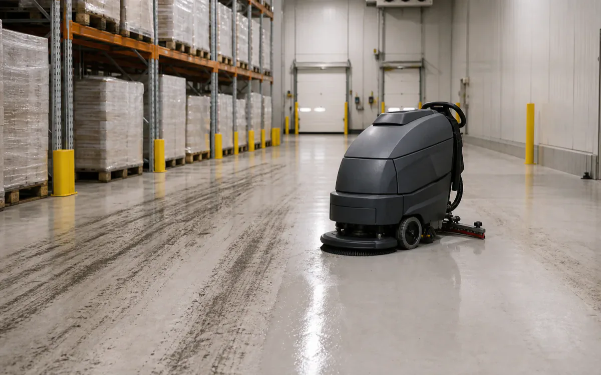
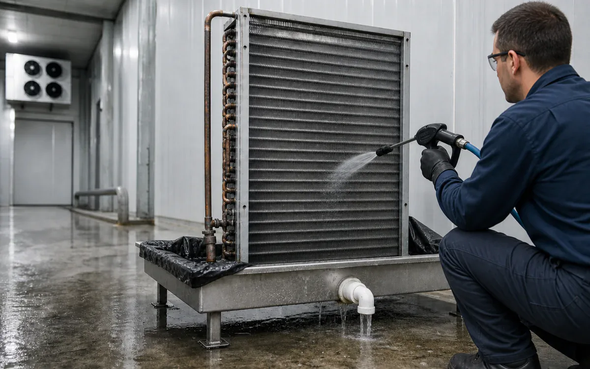

Cold-chain cleaning cannot wait for shutdown.
Perishable distribution centers, refrigerated bays, ammonia systems, forklifts, kitchens, drains, and coils with proof from Walmart DSC materials.
- CleanWarehouse floors, loading docks, forklifts, battery areas, drains, cold-room surfaces, and isolated evaporator components
- RemoveHydraulic oil, tire polymer, pallet grime, food residue, ice-related mineral scale, and drain film
- MethodSweep or scrape, pre-treat, low-foam auto-scrub or controlled foam, recover, and rinse
- BoundarySegregate food and packaging, isolate traffic and powered equipment, follow freezer/OEM limits, and do not represent cleaning as sanitizing.
- Open task controls and documents
Why VertKleen fits Distribution / Cold Storage.
Cold-storage teams juggle mildew, freezer entries, ammonia coils, condenser lines, kitchen grease, forklifts, and pilot readiness without stopping the building. VertKleen covers that whole walkdown with Descaler, CR HD, MultiWash, Purgo, and CR, and gets the proof, SDS, and trial details to you before the operations window closes.
Review field evidenceWhat Distribution / Cold Storage buyers need documented first.
Walmart perishable DSC materials check banana-room mildew, refrigerated hard-to-reach areas, ammonia coil scale, condenser and drain-line buildup, kitchen grease, and pilot readiness.
Bundle: Descaler for ammonia coils and heat-transfer circuits, CR HD for fryer, hood, floor, forklift, and parts degreasing, MultiWash and Purgo for spot mildew and odor-control support.
Generated scenes illustrate tasks. Field photos are labeled separately; only records completing the verification checklist are treated as field proof.



VertKleen products for Distribution / Cold Storage.
VertKleen options for Distribution / Cold Storage workflows.
Remove forklift oil, tire marks, food soils, and mineral buildup without leaving a slippery film in an operating facility.
Task controls first. Product choice follows the asset, deposit, materials, operating window, and discharge route.
- Task
- Remove forklift oil, tire marks, food soils, and mineral buildup without leaving a slippery film in an operating facility.
- Asset / substrate
- Warehouse floors, loading docks, forklifts, battery areas, drains, cold-room surfaces, and isolated evaporator components
- Soil / deposit
- Hydraulic oil, tire polymer, pallet grime, food residue, ice-related mineral scale, and drain film
- Starting chemistry
- VertKleen Descaler, VertKleen CR HD, VertKleen MultiWash, Purgo
- Concentration
- Use the current low-foam or general-cleaning label range; start weak, increase only after a slip-residue and coating test.
- Process controls
- Log floor temperature, dilution, wet dwell, pad/brush agitation, recovery passes, final rinse, and dry-to-traffic time.
- Shutdown / containment
- Segregate food and packaging, isolate traffic and powered equipment, follow freezer/OEM limits, and do not represent cleaning as sanitizing.
- Verification endpoint
- No visible oil or tire film, dry white-wipe, facility slip-resistance check, clear drains, and release only after the floor is dry.
Request SDS/TDS access or open the current public application file.
Registered users can request safety and technical sheets for staff review. Confirm revision, product identity, material compatibility, and application scope before site approval.
Bring us your Distribution / Cold Storage cleaning task.
The request opens with asset, soil, operating conditions, materials, wastewater route, and buying deadline already prompted.